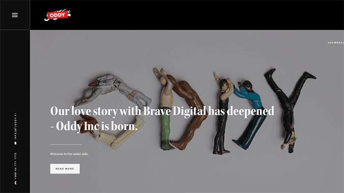
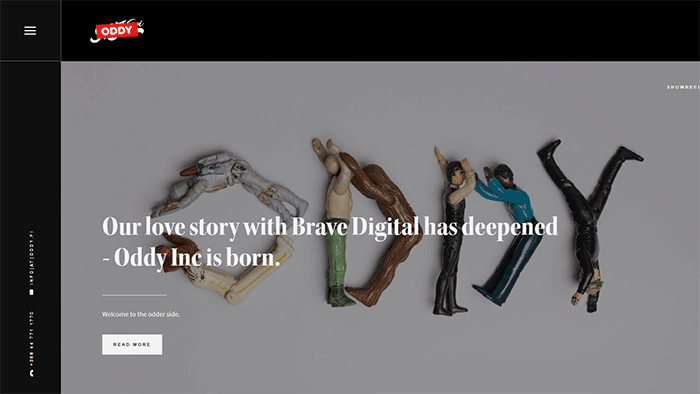

Design Influences
When looking for websites to influence my design I was originally researching generic websites and suggested websites from my colleagues. However, when I found TheSum website I decided that I wanted to use black and white, so I did more research into other websites that mainly use black and white. This lead me to an article containing over 50 websites which predominantly use black and white, which I took a selection of examples to use for my design. Using black and white, albeit very simple and plain, makes emphasising the content which users need to see easier, without conflicting colour too much. Another reason that black and white is useful is that when contrasting the colours, you can help make your page much accessible for users who may have difficulty reading or seeing colour.
The first website that I chose was fuse-design.co.uk. This site uses a huge amount of dark grey and white to emphasise the content. Also, the navigation bar was in a container on the side of the page, which is another feature which I have implemented. Another website that I used was sjhunter.net. This page is entirely in grey scale and all the main content is in a white body, with grey-like edges on the page.
Finally, the third page I viewed was www.adkiivi.fi. This is a very interactive web page which has black and white edges, but has coloured content in the centre. It also has the navigation bar on the left, but with a hamburger to open it. This is something I would have done, given more time to experiment, or moving the navigation bar to the top. This is because when looking at other websites I noticed that a huge percentage of websites have the navigation buttons at the top of the page, so if I were to start again this is something I would consider, or having it appear on a button press.
Another example site that I have viewed is livewires.io/example which was a great site to use in reference in what sort of layouts can be used and how to do them. However, like I have mentioned before I would make my website much more like my examples if I knew how to implement them at the time.
 
